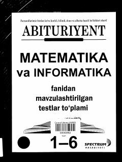

A1Matematika va informatika fanidan mavzulashtirilgan testlar to'plami.
Mazkur qo'llanma matematika va informatika fanlaridan yillar davomida «Abituriyent» gazetasida chop etilgan mavzulashtirilgan testlarni o'z ichiga oladi. Kitobda testlar mavzular bo'yicha tasniflanib, javoblari bilan birga taqdim etilgan. Ushbu to'plam abituriyentlar va o'qituvchilar uchun imtihonlarga tayyorgarlik ko'rishda muhim manba hisoblanadi.